AI Academy · Level 1 · Grade 6 · Week 11 · Student lesson
Repeating Efficiently
Learn to understand, design, build, test and explain AI systems responsibly.
Project: Helpful Classroom Sorter
THE CONNECTED WEEK
Test before repeating. Keep the stopping evidence.
Trace current-state loops, compare zero iterations and overshoot, diagnose failed progress and try a countdown.
Keep one habit: Test the current state → execute the body if authorised → return to the test.
Main lesson · Section 1
When does the next repetition happen?
Test before each body execution, count iterations separately and keep the actual final value.
Start with a stopping test
A loop can test four times and update only three times. Its last false test explains why it stops. A value seen during a run is not necessarily a final report.
Retrieve the one-decision rule
Score is 4. If score is below 5, add 3; otherwise subtract 2. Report and stop. Does reaching 7 cause another test? Explain.
Close your notes first. A rough first answer helps us choose the right starting point; it is not a score for your ability.
After trying, check the relevant lesson or ask your teacher. Change the part of your explanation that the evidence shows was wrong.
By the end, you can…
I can trace a loop by testing its condition before every repetition.
I can distinguish the number of repetitions from the final value and include zero repetitions.
I can explain why an update reaches a stopping condition or why a faulty loop keeps repeating.
Earlier wording, alternatives and picture transcripts
Your learning target
Remember before reading
Without opening the old lesson, explain one key idea from If/Then Decisions. Give an example and a mistake that the idea helps you avoid.
Without opening the old lesson, explain one key idea from Features: Useful Clues. Give an example and a mistake that the idea helps you avoid.
Without opening the old lesson, explain one key idea from Pictures Become Numbers. Give an example and a mistake that the idea helps you avoid.
A loop repeats a useful step until a stopping condition is met.

LEARNING TARGET A robot stamps the next unstamped card until it has stamped five cards. Only three cards are available. Write a stopping rule that handles both limits and trace the number stamped.
Learner name:
Readiness for the connected explanation
This week’s end goal
By the end, I can check a loop condition before each update and count iterations.
Main lesson · Section 2
A while loop returns to its test
Use the updated counter each time the body finishes.
Read the below-7 loop
A paper counter starts at 1. While the counter is below 7, add 2 to it. When the test is false, report the counter and stop.
The word while means test first, run the body only if true, then return to the test using the updated value. The body here is just add 2.
Count tests and additions separately
The counter follows 1, 3, 5, 7. At 1, 3 and 5 the condition is true, so each test is followed by one addition. At 7 the condition is false. No addition follows that final test. The loop has three iterations and reports 7.
Contrast while with one if decision
Compare the Week 10 instruction if counter is below 7, add 2, then report. From 1 that single decision reports 3. A while loop explicitly returns to its test; an if decision does not.
Draw a pointer to the instruction being executed instead of deciding for yourself when to repeat.
Explain the stopping step
For the start at 1, mark each true test and the addition it authorises. What happens at the first false test? Explain why a single if decision from the same start behaves differently.
Earlier wording, alternatives and picture transcripts
PICTURE STORY
Look Closely Before You Explain
Pictures give clues; evidence tells us what the clues mean.

MYSTERY Instead of writing draw-side and turn four times, a square algorithm can repeat those steps four times.
What do you notice?
Name three visible details without explaining them yet.
Circle the detail most connected to the system's decision.
Name one detail that may be decoration or distraction.
Make a first prediction and state the clue that supports it.
My observations, prediction, and evidence:
GOOD THINKING A prediction can change when stronger evidence appears.
A closer explanation
Main lesson · Section 3
Keep the final false test in the trace
Each row needs the current value, condition result and authorised next action.
Read the complete test sequence
A complete loop trace
Explain four tests but three iterations
The trace has four tests but only three iterations. The false test is evidence that this run stops. A list ending at 5 would be incomplete, while a list continuing to 9 would include an addition the loop did not authorise.
Retain repeated states as evidence
Write the current value, the test result and the action on every row. Repeated values can matter: if the body does not change the state used by the test, the same true test may occur again.
Do not erase these rows simply because they look unhelpful.
Explain a deciding row
Point to the input, the deciding step and the result in this week’s visual. Explain the same step in ordinary words. A picture helps when you can say what each part represents.
Earlier wording, alternatives and picture transcripts
VISUAL MECHANISM
Input → Process → Output
Follow the information instead of imagining magic inside the machine.


INPUT starting state and repeat count
PROCESS run the loop body and update progress
OUTPUT finished pattern when the stop condition is met
CORE IDEA A loop repeats a useful step until a stopping condition is met.
UNDER THE HOOD For these bounded counter exercises, specify the starting value, repeated action, update and stopping test. Check that the updates eventually make the test false; otherwise a run may continue forever or repeat the wrong number of times. Other programs may use different loop designs, such as waiting for a stop signal.
Draw a fresh example with all three stages:
A closer explanation
Connect the picture and the explanation
Main lesson · Section 4
Compare repetition and stopping clues
Identify the body, the next test and what makes repetition end.
Pictures paired with their evidence

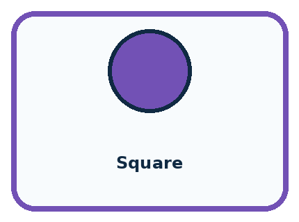
The case to investigate
CASE 1 — Square Clue: repeat move and turn 4 times. Meaning: counted loop.

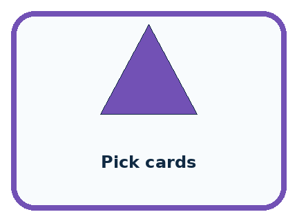
The case to investigate
CASE 2 — Pick cards Clue: repeat until pile empty. Meaning: condition loop.

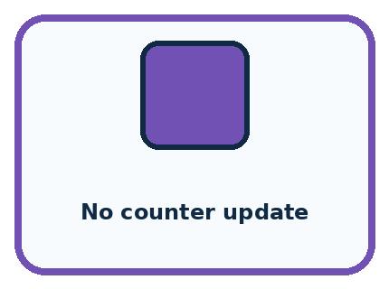
The case to investigate
CASE 3 — No counter update Clue: condition never changes. Meaning: infinite loop risk.

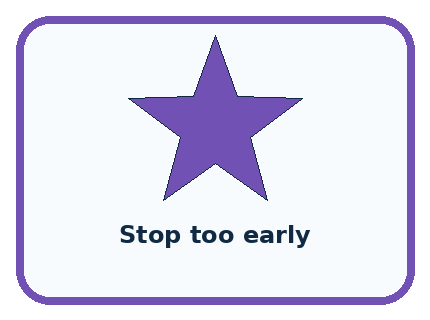
The case to investigate
CASE 4 — Stop too early Clue: one item remains. Meaning: off-by-one error.
Discuss the confusing pair
Which two pictures are easiest to confuse? What evidence separates them?
Keep the limit in view
BOUNDARY Repeat forever is not an efficient algorithm unless endless operation is truly the goal and can be stopped safely.
Earlier wording, alternatives and picture transcripts
PICTURE GALLERY
Four Cases, Four Clues
Use the visual cue, then read the evidence carefully.
CASE 1 — Square Clue: repeat move and turn 4 times. Meaning: counted loop.
CASE 2 — Pick cards Clue: repeat until pile empty. Meaning: condition loop.
CASE 3 — No counter update Clue: condition never changes. Meaning: infinite loop risk.
CASE 4 — Stop too early Clue: one item remains. Meaning: off-by-one error.
Change one thing in the pictured case
Change: Start at 10 instead of 2.
Prediction: The loop runs zero times and reports 10.
Reason: Its first condition is already false, so no addition happens.
Main lesson · Section 6
The loop may cross the boundary before stopping
Use the stated add-3 loop and report the actual state after its false test.
The new counter recipe
A fictional paper counter advances through a display until its condition becomes false.
Start at 2. While the current counter is below 10, add 3.
Test before each addition; report when the condition is false.
Follow every test and update

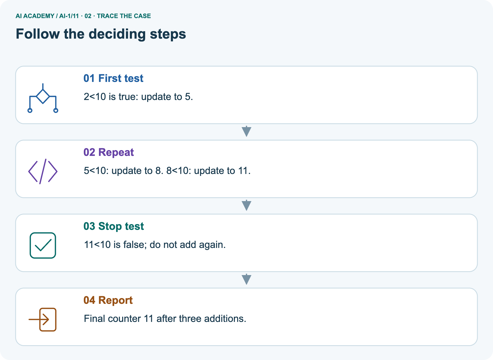

Compare the condition-check record

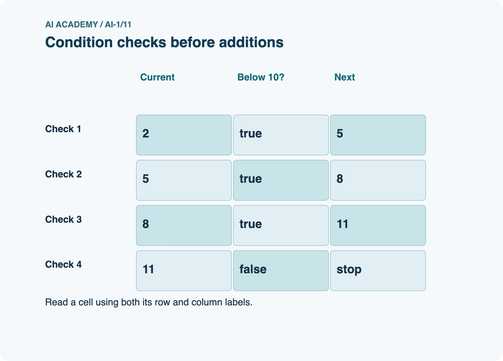

Explain why 11 is a valid report
The condition checks whether to do the next update; it does not constrain every resulting value to stay below 10. The final 11 is therefore allowed by this procedure.
Record both the condition and counter to distinguish a correct stop from an assumed endpoint.
Predict from the boundary itself
Before checking, start this below-10, add-3 loop at 10. Write its first test and decide whether any addition is authorised. Keep the iteration count separate from the reported value.
Check the zero-iteration run

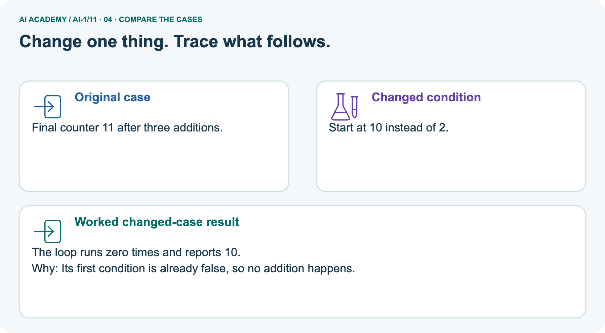

Explain the need for progress
This loop stops because positive increments eventually cross the limit. Other updates can fail to make progress.
Trace the fresh start at 9
Read the labelled picture: Trace a fresh start of 9. How many additions occur, and must the report equal 10?
Earlier wording, alternatives and picture transcripts
WORKED EXAMPLE
Watch the Reasoning, Not Just the Answer
Every step connects a claim to observable evidence.

CASE Instead of writing draw-side and turn four times, a square algorithm can repeat those steps four times.
STEP 1 — OBSERVE starting state and repeat count
STEP 2 — TRACE run the loop body and update progress
STEP 3 — CONCLUDE finished pattern when the stop condition is met
MODEL REASONING Place only the repeated steps inside the loop, initialize the counter, update it once per pass, and stop after the required count. Trace each iteration to catch one-too-many or one-too-few errors.
DO NOT OVERCLAIM Repeat forever is not an efficient algorithm unless endless operation is truly the goal and can be stopped safely.
What new evidence could change this answer?
A closer explanation
| Starting counter | Values at successive tests | Iterations and reported value |
|---|---|---|
| 5 | 5 true then 7 false | 1 iteration and report 7 |
| 6 | 6 true then 8 false | 1 iteration and report 8 |
| 7 | 7 false | 0 iterations and report 7 |
| 8 | 8 false | 0 iterations and report 8 |
While tests before the body. If the first test is false, the body runs zero times. Do not add 2 once just because a loop is present. Starting at 7 or 8 is a useful test of this rule.
A loop that stops when the counter is no longer below 7 does not promise to finish at exactly 7. Starting at 6 produces 8. Passing the boundary is allowed by these instructions.
Always report the actual final state instead of replacing it with the threshold.
Learn from the worked case
Cover the result before checking it. Say what is given, choose the procedure, and follow one step at a time. Then uncover the result and explain your first mismatch. Ask why a step is allowed, not only what number it produces.
A pictorial worked case: Repeating Efficiently
The facts we will use

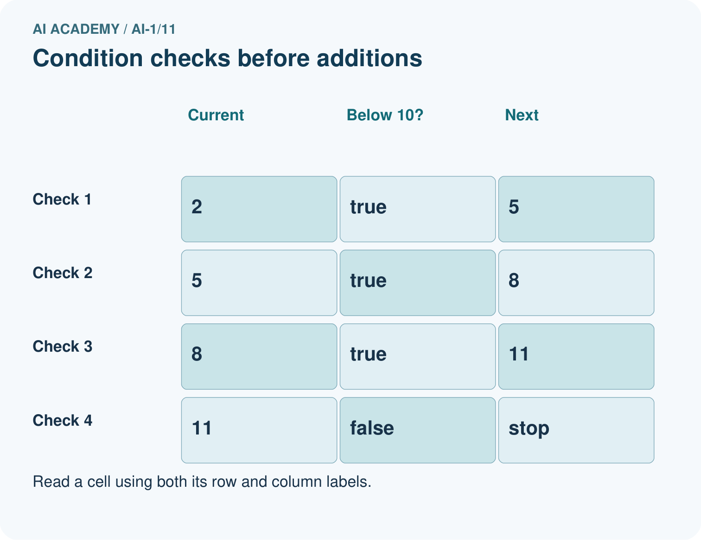


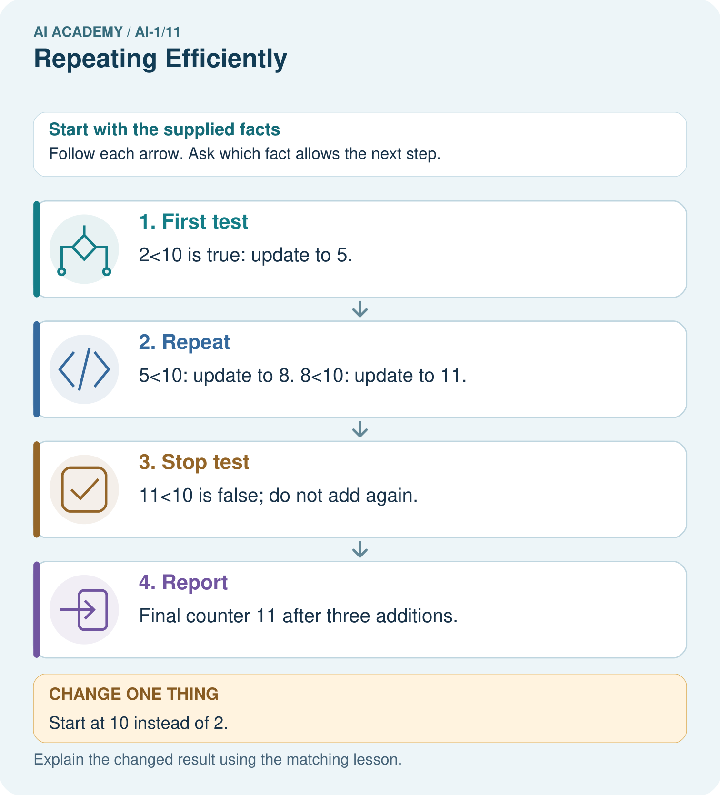

Read the picture one step at a time
Why this result follows
What this example does not establish
Change one thing: Start at 10 instead of 2. Predict the result before checking the explanation. What remains the same?
Main lesson · Section 7
Progress must fit the stopping test
Growing numbers do not guarantee that an equality target will be reached.
Why the even-number run never reaches 7
A different mistake says while counter is not equal to 7, add 2. From 6 the values are 6, 8, 10 and then larger even numbers. None is 7, so this equality test never becomes false.
A growing number does not guarantee termination: the update must be able to reach a state that makes this particular test false.
Preserve an unavailable starting value
Our paper examples use known whole numbers without a maximum size. For this lesson, an unreadable starting counter means pause and request the value. It does not mean start at zero.
Later programs will need explicit rules for unavailable inputs and resource limits.
Choose revealing additional starts
CLAIM A A loop is just copying the same words many times.
CLAIM B The stopping condition will become true by itself.
STRONG ANSWER FRAME I claim ______ because the evidence shows ______. The process is ______. One limit is ______.
Earlier wording, alternatives and picture transcripts
COMPARE
Same Result, Different Reason
A comparison helps reveal the true concept boundary.
| Case | Evidence | What it shows |
|---|---|---|
| Square | repeat move and turn 4 times | counted loop |
| Pick cards | repeat until pile empty | condition loop |
| No counter update | condition never changes | infinite loop risk |
| Stop too early | one item remains | off-by-one error |
Repair two tempting claims
Repair:
Repair:
A closer explanation
Main lesson · Section 8
Practise: distinguish a stopped trace from an interrupted one
Show why the update eventually makes the test false, or why it keeps returning the same result.
Explain progress for positive increments
For our known whole-number counters below 7, adding 2 makes the counter larger each time. After enough additions it is at least 7, so the test becomes false.
This explains why this loop stops for these inputs; one successful trace alone would not establish that for every possible procedure.
Trace the faulty add-0 body
Now change the body to add 0. Starting at 1 gives the same value 1 at every test. Below 7 remains true, and the loop never reaches its reporting instruction.
A classroom trace should be stopped by the teacher after the repeated state is established. That intervention is not a successful program result.
Use W2 to check the very first test
Use workbook W2 for the connected example “Loops and stopping rules”. First fill the input and rule boxes. Try the middle steps before asking for a hint. After a hint, try the next step yourself.
| Plan | Do | Check |
|---|---|---|
| What is given? Which rule or procedure applies? | Record each intermediate step. | Does the result follow? What remains unknown? |
Explain your trace to a partner. Your partner points to one step to check. Swap roles on the next case. Each person writes their own explanation.
Challenge “every loop runs at least once”
Use the worked case for Loops and stopping rules. Proposed explanation: “Every loop runs at least once”. Decide whether this explanation is supported.
Point to the step or supplied fact that decides; explain your repair if needed.
Answer on your own before discussion. If you are unsure, say which step you need help with.
Explain the pictured overshoot
Trace a fresh start of 9. How many additions occur, and must the report equal 10?
This is supported practice. Keep the separately named independent case for an attempt before feedback.
Earlier wording, alternatives and picture transcripts
GUIDED PRACTICE
Try It, Check It, Explain It
Use support now so you can succeed independently later.

Explain how the picture story demonstrates this idea: A loop repeats a useful step until a stopping condition is met.
Use a fresh example to explain loop.
Trace a new input → process → output example.
Find and repair the error in: The stopping condition will become true by itself.
Invent one edge case and name the safe response.
PARTNER CHECK Point to the evidence. Do not accept an answer that only repeats the vocabulary word.
A closer explanation
Practise with less help: Check the first test
Check your reasoning
Explain the picture
Main lesson · Section 9
Investigate a complete drawing-loop card
Compare a normal loop, zero repetitions and a missing progress update.
The initial state, body and stopping rule
Use a paper row, a next-cell marker and a counter drawn. Start with drawn=0 and target=3. While drawn is below target: draw a star in the next empty cell, move the marker one cell right, then add 1 to drawn. When the test is false, report drawn and stop. A loop card must include that entire three-instruction body.
Predict, trace and diagnose
Predict the picture and trace target=3. Reset and try target=0; record the first false test without drawing. Then inspect a faulty card that omits add 1 to drawn. On paper, show two repeated true tests and explain why the target is never reached in that faulty trace; stop the classroom demonstration there. That intervention is not the procedure successfully reporting a result.
Keep a normal case and an edge case clearly separated.
Record what happened—even when it does not match your prediction.
Explain the result, one limitation, and the next useful test.
Keep iterations, tests and reports separate
| Case | Prediction | Observed result | What it means |
|---|---|---|---|
| Normal | |||
| Edge |
Before trying: what do I expect, and why? While trying: which step could first go wrong? Afterwards: what did I actually observe, and what should change? Keep “not run” if you only traced the procedure.
Earlier wording, alternatives and picture transcripts
EXPLORER LAB
Loop Card Drawing
Predict first, test honestly, and explain what the evidence means.

State your prediction before the result is known.
Complete the task: Compress a repeated drawing algorithm using a loop card.
INDEPENDENCE After support is removed, repeat the proof with a fresh case.
Plan → try → check
Main lesson · Section 14
Try alone: transfer the loop method to a countdown
Use the above-1 test and subtract-2 body, then inspect zero progress.
The new countdown task
A paper countdown starts at 7. While remaining is above 1, subtract 2. When false, report and stop. Trace the run and count iterations. Repeat from 6 and from 1. Explain why the final value need not equal 1.
What happens from 7 if subtract 2 is replaced by subtract 0?
Keep one first attempt
Attempt this case before feedback. Record any help. Earlier examples below are further practice; a case already practised with feedback cannot establish fresh transfer.
Your teacher has the independent answer and scoring criteria. Complete the matching workbook week to keep your practice evidence together.
Use feedback afterwards
Attempt the independent case before hints. Record whether you worked alone, used a hint or followed a model. After feedback, fix the first unsupported step and explain why it changed.
A later check uses a changed case, not a copied answer.
Earlier wording, alternatives and picture transcripts
Independent case: Transfer to a countdown
Week 11 Independent application
Close the worked explanation. Apply the idea to this different question without copying.
Repeat clap then tap three times. Write the complete sequence. How many actions occur? What would happen if the stopping instruction were missing?
My answer, with a trace, calculation or supporting evidence
Create and test
Change one relevant detail. Predict the result before testing. Include a boundary or missing-information case when it helps reveal a limit.
My changed input and expected result
Connect to your project
Use a loop to process each item card in the test pile, with an explicit stop when no cards remain.
The evidence I will keep
Transfer practice from the original programme
A robot stamps the next unstamped card until it has stamped five cards. Only three cards are available. Write a stopping rule that handles both limits and trace the number stamped.
Use feedback to improve
Main lesson · Section 11
Give repeated sorter work a stopping rule
Check both an empty input pile and a normal finite pile.
This week’s project decision
THIS WEEK'S CHECKPOINT Use a loop to process each item card in the test pile, with an explicit stop when no cards remain.
Give any repeated sorter step an explicit stopping condition and trace a zero-iteration example.
Plan the state, updates and tests
What real classroom need does this serve?
What information is necessary—and what should stay private?
What happens inside the process?
What normal and edge cases will you test?
When should it say not sure or ask a person?
Keep endless repetition distinguishable from useful stopping
RESPONSIBLE DESIGN Repeat forever is not an efficient algorithm unless endless operation is truly the goal and can be stopped safely.
Earlier wording, alternatives and picture transcripts
PROJECT
Helpful Classroom Sorter
Build one coherent system across the year, one evidence-based decision at a time.


My project decision:
Evidence for your project
Main lesson · Section 16
Finish: justify the final false test
Close your notes and explain the iteration count and actual report separately.
Your exit explanation
Close your notes. Explain this goal in your own words: Trace a loop by testing its condition before every repetition
Choose support and revisit later
If you are unsure, return to the worked picture and explain one arrow. If you are ready, change an input or assumption and justify your prediction.
Save your workbook evidence. At the next review, try a different case before opening your old answer.
Reference bank and extra practice
Choose the reference that helps your next step.
Your quick word guide
Reference · Section 5
Your quick word guide
Use the words to explain a particular step, record or limit.
Core vocabulary
| Word | Meaning | My example |
|---|---|---|
| loop | control structure that repeats steps | |
| iteration | one pass through the loop | |
| loop body | steps repeated each time | |
| stopping condition | rule that ends repetition |
Terms for the connected explanation
| Word | Meaning |
|---|---|
| Body | The instructions performed on each iteration |
| Progress | A change that brings the state closer to a stopping condition |
Repair a claim using a word
CLAIM TO REPAIR A loop is just copying the same words many times.
Use one vocabulary word and one piece of evidence to repair it:
Earlier wording, alternatives and picture transcripts
VOCABULARY
Words You Can See and Use
The badge is a memory cue; the definition does the real thinking work.


Misconception detective
WORD POWER A strong definition helps you decide something in a new case.
Words used in the closer explanation
Choose a stronger thinking challenge
Reference · Section 10
Choose a stronger thinking challenge
Choose the next useful challenge rather than treating the whole ladder as compulsory.
Pick your next step
RECALL Define loop.
EXPLAIN A loop repeats a useful step until a stopping condition is met.
TRACE Show the input, process, and output.
DIAGNOSE Repair: A loop is just copying the same words many times.
TRANSFER Apply the idea to a new home or classroom case.
CREATE Design one revealing test.
DEFEND Give a claim, evidence, mechanism, limit, and safe action.
Earlier wording, alternatives and picture transcripts
PRACTICE LADDER
Climb from Recall to Defense
Each step asks for a stronger kind of understanding.

RETRY RULE A coached answer becomes mastery only after you solve a different case independently.
Reference: check your explanation
Reference · Section 12
Reference: check your explanation
Use after practice. Transfer to a countdown is the selected independent case.
Check the evidence and its limit
□ Name or draw the fresh case.
□ Trace input, process, and output.
□ State the conclusion and strongest evidence.
□ Name one limit, failure, missing clue, or fairness/privacy concern.
□ Explain one safe next action or improvement.
Record support
My level: □ Not yet □ With one hint □ Independently □ I can teach it
Earlier wording, alternatives and picture transcripts
MASTERY
Checklist for explaining this week’s idea
Use after practice. Transfer to a countdown is the selected independent case.

EXPLANATION CHECK Record every test including the final false one; count body executions, report the actual state and explain progress or nontermination.
Independent evidence:
SELF-CHECK Place only the repeated steps inside the loop, initialize the counter, update it once per pass, and stop after the required count. Trace each iteration to catch one-too-many or one-too-few errors.
NEXT BRIDGE Carry today's evidence habit into: Debug the Cause.
Extra practice: Repeat with a clear stopping point
Reference · Section 13
Extra practice: Repeat with a clear stopping point
Try the question before opening its worked explanation.
Read the supplied case and question
Repeat take the next unstamped card and stamp it four times.
How many cards are stamped? What assumption matters?
Your explanation
Which detail supports the answer, and why does it matter?
Check after trying
Four, provided four unstamped cards exist and each repeat takes the next one. A limit or end-of-stack check prevents continuing indefinitely.
| Evidence or stage | Value or result |
|---|---|
| Before | 0 stamped |
| Repeat 1 | 1 stamped |
| Repeat 2 | 2 stamped |
| Repeat 3 | 3 stamped |
| Repeat 4 | 4 stamped, stop |
Earlier wording, alternatives and picture transcripts
Week 11 Worked case
Use the supplied details to practise the weekly concept before attempting the independent question. This case extends the illustrated lesson.
The situation
The question
Worked explanation
Explain it in your own words
Trace the supplied case visually
Repeat with a clear stopping point
Repeat take the next unstamped card and stamp it four times.
How many cards are stamped? What assumption matters?
Four, provided four unstamped cards exist and each repeat takes the next one. A limit or end-of-stack check prevents continuing indefinitely.
Reference: original lesson checklist
Reference · Section 15
Reference: original lesson checklist
Use an additional checklist when it helps inspect your explanation.
Targets and evidence
| By the end, I can | How I will show it |
|---|---|
| Trace a loop by testing its condition before every repetition | Explain the deciding step, show a trace or test, and state one limit. |
| Distinguish the number of repetitions from the final value and include zero repetitions | Explain the deciding step, show a trace or test, and state one limit. |
| Explain why an update reaches a stopping condition or why a faulty loop keeps repeating | Explain the deciding step, show a trace or test, and state one limit. |
Keep your route and first prediction
Remember → watch and explain → try with help → investigate → try independently → keep project evidence. Your teacher may spread this lesson across several classes.
Keep your first prediction. Compare it with what the evidence shows and explain any change.
Earlier wording, alternatives and picture transcripts
Start with this question: A fictional paper counter advances through a display until its condition becomes false.
Extra practice: pictures, repair and feedback
Reference · Section 17
Extra practice: pictures, repair and feedback
Attempt each question before opening its explanation. Use one browser or paper copy.
First supported question
A fictional paper counter advances through a display until its condition becomes false.
Which labelled step matches this detail? Final counter 11 after three additions.
1. Report
2. First test
3. Repeat
4. Stop test
Hint if needed: Read the steps in the pictorial case. Match the supplied detail to the stage that performs or records it.
Practice 1: explain the deciding evidence
Check the first explanation
After your attempt, compare with the supported explanation: Report Final counter 11 after three additions. The condition checks whether to do the next update; it does not constrain every resulting value to stay below 10.
The final 11 is therefore allowed by this procedure. Record both the condition and counter to distinguish a correct stop from an assumed endpoint.
Changed-case question
Changed-case practice: Start at 10 instead of 2. Which conclusion is supported by the supplied facts?
1. This one example guarantees correct results for every future input.
2. We can decide the result without examining the changed input or the procedure.
3. The loop runs zero times and reports 10.
Hint if needed: Use the changed condition and the deciding step in the pictorial trace. The answer must say what follows from those facts.
Practice 2: explain the deciding evidence
Check the changed case
After your attempt, compare with the supported explanation: The loop runs zero times and reports 10. Its first condition is already false, so no addition happens.
Repair and save your work
Review If/Then Decisions (ai-1/10). Goal: Evaluate a condition using the current state and trace only the selected branch. Short practice: Which input detects the difference between the two written conditions?
Explain its entire run.. Return to this week and explain what you changed.
Review Features: Useful Clues (ai-1/8). Goal: Choose recorded properties that preserve distinctions needed for a stated task.
Short practice: Point to the pair that tests pattern, then explain why the sticker is a bad early input.. Return to this week and explain what you changed.
Review Pictures Become Numbers (ai-1/5). Goal: Encode and reconstruct a small image using an explicit grid convention.
Short practice: Find a position where the original badges differ, then read the changed A back as a picture.. Return to this week and explain what you changed.
Use Download completed work in the hosted lesson to export your answers, reflections, practice feedback and code-run evidence. Open the HTML copy to read or print it.
Drafts stay in this browser when storage is available; clear drafts on a shared device.
Earlier wording, alternatives and picture transcripts
Use this supported practice once, in the browser or on paper. Keep the reserved independent assessment for a separate first attempt before teacher feedback.
Repair a missing building block
Keep your completed work
Reference: the six-picture journey
Reference · Section 18
Reference: the six-picture journey
Revisit the picture that serves the current question; key diagrams already sit beside the main explanation.
01. Repeating Efficiently: the case

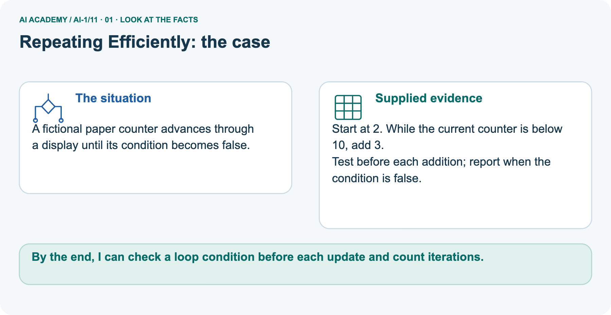

A fictional paper counter advances through a display until its condition becomes false. Supplied facts: Start at 2. While the current counter is below 10, add 3. Test before each addition; report when the condition is false.
Point to the given fact that matters most. Explain why it matters.
02. Follow the deciding steps
First test: 2<10 is true: update to 5. → Repeat: 5<10: update to 8. 8<10: update to 11. → Stop test: 11<10 is false; do not add again. → Report: Final counter 11 after three additions.
Point to each numbered stage and explain which recorded input it uses.
03. Condition checks before additions
Condition checks before additions. Check 1: Current = 2, Below 10? = true, Next = 5. Check 2: Current = 5, Below 10? = true, Next = 8. Check 3: Current = 8, Below 10? = true, Next = 11.
Check 4: Current = 11, Below 10? = false, Next = stop.
Read the labels and values. Explain the relationship the model shows.
04. Change one thing. Trace what follows.
Original case: Final counter 11 after three additions. Changed condition: Start at 10 instead of 2. Expected result: The loop runs zero times and reports 10.
Reason: Its first condition is already false, so no addition happens.
Predict before checking the worked changed-case result. Name what changed and what the supplied facts allow you to conclude.
05. Connect the explanation to its limit

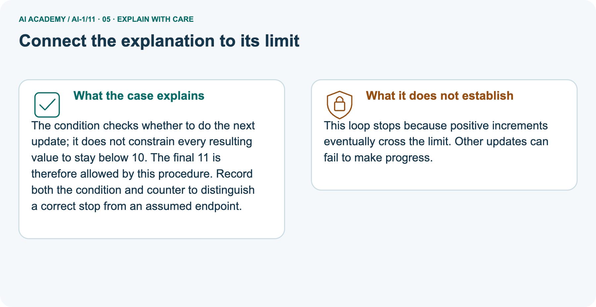

The condition checks whether to do the next update; it does not constrain every resulting value to stay below 10. The final 11 is therefore allowed by this procedure.
Record both the condition and counter to distinguish a correct stop from an assumed endpoint. Limit: This loop stops because positive increments eventually cross the limit. Other updates can fail to make progress.
Explain the case, then point to a limit on the claim.
06. Make the idea visible in your project

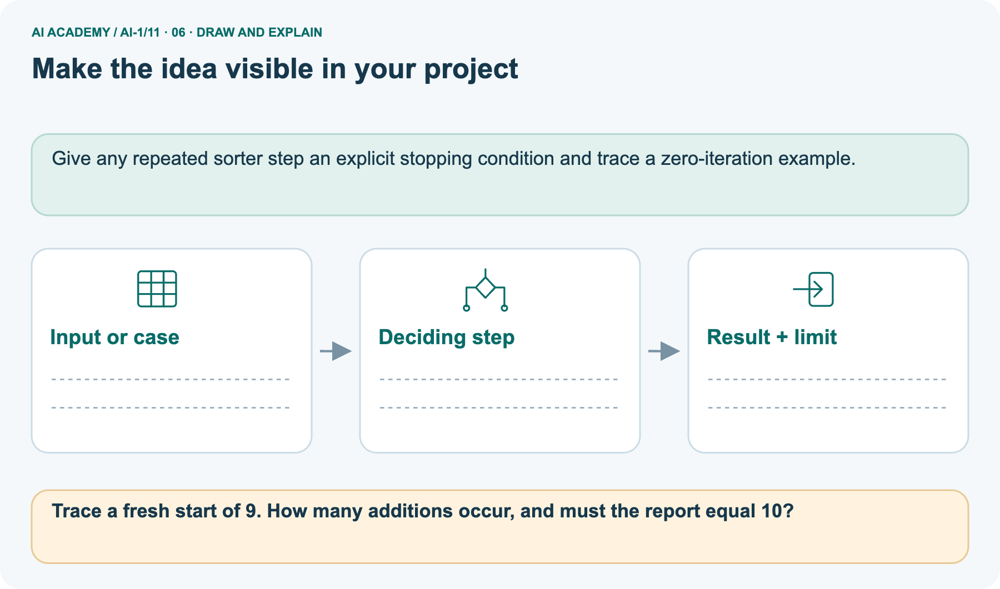

Give any repeated sorter step an explicit stopping condition and trace a zero-iteration example. Draw your input, deciding step, result and limit. Supported question: Trace a fresh start of 9.
How many additions occur, and must the report equal 10?
Draw your project trace and justify the deciding step using evidence.